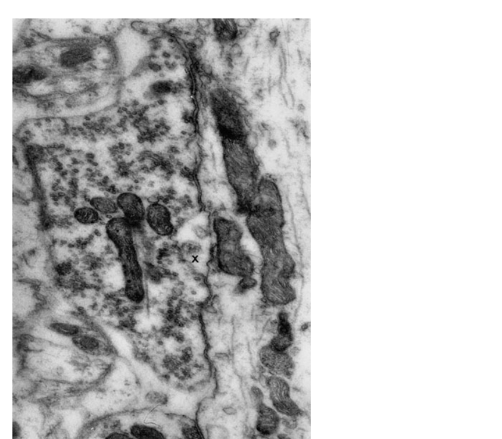
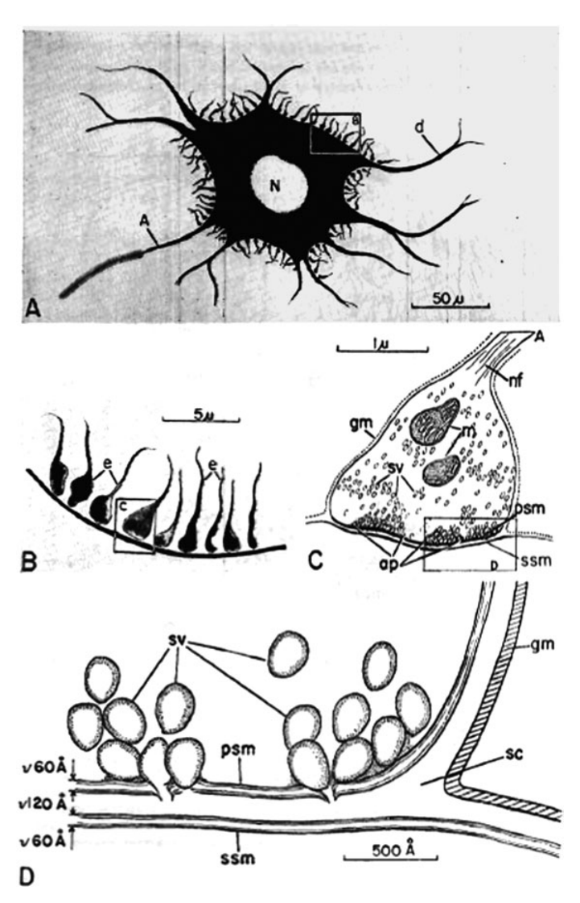

Chương 5 — Sinh học tế bào và khớp thần kinh (synap)
Chương 5
Sinh học tế bào và Synapse
Trước thập niên 1950, cấu trúc tế bào chỉ có thể được nghiên cứu dưới kính hiển vi quang học và các bào quan thực hiện chức năng của tế bào chỉ được nhìn thấy một cách mờ nhạt. Đến cuối thập niên 1950, kính hiển vi điện tử (EM) và các phương pháp khác đã mở ra một lĩnh vực hoàn toàn mới là sinh học tế bào, trong đó mỗi bào quan được công nhận là đóng góp một tập hợp chức năng riêng biệt vào cơ chế tổng thể của tế bào. Quan trọng nhất đối với hệ thần kinh, các tiếp xúc synapse do tế bào thần kinh tạo thành có thể được xác định và mô tả đặc tính một cách rõ ràng. Cuộc cách mạng được hứa hẹn bởi học thuyết tế bào hơn 100 năm trước cuối cùng đã đến, mang theo bằng chứng rằng cả sự tiếp xúc lẫn tính liên tục đều là nền tảng để xây dựng các mạch thần kinh. Cơ sở phân tử của synapse trở thành một trong những chủ đề trung tâm của nghiên cứu khoa học thần kinh hiện đại. Nhiều rối loạn thần kinh là do những biến đổi bệnh lý ảnh hưởng đến chức năng synapse, và phần lớn nghiên cứu dược phẩm về phát hiện thuốc đều nhắm vào synapse, như sẽ thấy rõ ở Chương 15. Ở đây chúng ta tập trung vào synapse hóa học như bào quan đặc biệt nhất đối với tế bào thần kinh, nhưng điều đó không nên làm lu mờ các bào quan khác, vốn dường như liên quan nhiều nhất đến các tế bào cơ thể khác vào thời điểm đó nhưng ngày càng được xem là tối quan trọng đối với chức năng thần kinh.
Tế bào học—ngành nghiên cứu cấu trúc của tế bào—có nguồn gốc từ kính hiển vi quang học của thế kỷ XIX. Mặc dù đến đầu thế kỷ XX một số bào quan bên trong tế bào đã được xác định—nhiễm sắc thể, ty thể, sợi thần kinh (neurofilament), thể Golgi—chúng chỉ có thể được nhìn thấy một cách mờ nhạt do những hạn chế quang học của kính hiển vi, phương pháp cố định và kỹ thuật chiếu sáng hiện có. Sự ra đời của phương pháp phân đoạn tế bào bằng ly tâm phân biệt (Claude, 1946) đã mở ra cánh cửa cho việc phân tích hóa sinh các phân đoạn tế bào (xem Chương 2). Tuy nhiên, các vấn đề vẫn gây tranh cãi đến mức vào tận giữa thế kỷ, một bài tổng quan thấu đáo các tài liệu của những chuyên gia đầu ngành đã cho rằng thể Golgi nhiều khả năng chỉ là một giả ảnh (artifact) (Palade và Claude, 1949)!
Các bào quan tế bào
Tất cả sự không chắc chắn này đã bị quét sạch nhờ việc ứng dụng kính hiển vi điện tử (EM) trong sinh học. Chỉ trong vòng vài năm đầu thập niên 1950 (khoảng 1952–1956), cấu trúc tinh vi (nói cách khác là siêu cấu trúc được quan sát qua EM ở độ phóng đại lên tới 50.000 lần hoặc hơn so với chưa đầy 1.000 lần dưới kính hiển vi quang học) của tất cả các bào quan chính trong tế bào đã được xác định và mô tả đặc tính. Lịch sử này thuộc về tế bào học và lĩnh vực mới là sinh học tế bào, nhưng nó cũng ngày càng liên quan đến việc hiểu các đặc điểm chuyên biệt được thích nghi cho hệ thần kinh. Những đặc điểm cấu trúc tinh vi này của tế bào do EM hé lộ được tóm tắt trong Bảng 5.1. Đó là những đặc điểm cấu trúc tinh vi và các bào quan chính mà chúng ta công nhận ngày nay.
Đó là một trong những giai đoạn kịch tính nhất trong lịch sử sinh học, có tầm ảnh hưởng tương đương với học thuyết tế bào vào thập niên 1840. Nó định hình lĩnh vực mới về cấu trúc tinh vi tế bào, ngành học mới là sinh học tế bào, và chương trình nghị sự mới cho việc nghiên cứu phân tử các chức năng tế bào kể từ đó. Mỗi bào quan đã trở thành một lĩnh vực riêng trong sinh học tế bào. Như Porter và Bennett (1981, XI) hồi tưởng:
Bảng 5.1 Những khám phá về cấu trúc tinh vi của các bào quan tế bào, đặt nền móng cho các lĩnh vực mới là Sinh học Tế bào và Sinh học Phân tử của Tế bào
Lông chuyển (với cấu trúc vi ống 9 + 2 đặc trưng) (Fawcett và Porter, 1954) Lưới nội chất hạt và trơn (Palade và Porter, 1954; Palay và Palade, 1954;
Fawcett, 1954) Thể Golgi (Dalton và Felix, 1954) Lysosome (Novikoff và cs., 1956) Ty thể (Palade, 1953; Sjo¨strand, 1953) Thoi phân bào (Mazia và Dan, 1952) Cấu trúc cơ (‘‘giả thuyết sợi trượt’’) (Huxley và Niedergerke, 1954a, 1954b;
Huxley và Hanson, 1954) Myelin (Geren, 1954; Robertson, 1955) Nhân và hạch nhân (Porter, 1955) Các hạt nucleoprotein (Palade, 1955), sau này được đổi tên thành ‘‘ribosome’’ (Roberts, 1958) Màng sinh chất (Robertson, 1957a, b)
(được tóm tắt trong Gall và cs., 1981, và Fawcett, 1981, nơi chứa các tài liệu tham khảo này và các tài liệu khác)
Một thế giới mới đang mở ra cho việc nghiên cứu; một dòng thác thông tin mới đã được khơi thông. Niềm phấn khích của khám phá và tinh thần đồng đội vì mục tiêu chung đã gắn kết chúng tôi lại với nhau. Tình bạn và sự tôn trọng lẫn nhau nảy nở trong những ngày sôi động ấy đã bền vững theo thời gian và củng cố lĩnh vực sinh học tế bào.
Chính ‘‘niềm phấn khích và tinh thần đồng đội vì mục tiêu chung’’ này đã thu hút chúng ta đến với thập niên 1950, một giai đoạn đã đặt ra tiêu chuẩn để đánh giá tầm quan trọng của các khám phá trong sinh học và khoa học thần kinh hiện đại.
Bối cảnh về Synapse
Điều thú vị nhất đối với hệ thần kinh là cấu trúc tinh vi của synapse. Trước tiên, tôi xin cung cấp một bối cảnh ngắn gọn về vấn đề này và nguồn gốc của nó.
Khi khái niệm về neuron được hình thành vào năm 1891 (xem Chương 8), ý tưởng của Ramo´n y Cajal được chấp nhận rằng các neuron tương tác thông qua ‘‘các điểm tiếp xúc’’ giữa sợi trục và sợi nhánh của chúng. Vào thời điểm đó chưa có bằng chứng nào về bản chất của tác động tại những điểm tiếp xúc như vậy. Phép loại suy tốt nhất với các thiết bị thời bấy giờ dường như là các hoạt động thần kinh diễn ra tương tự như dòng điện trong một cuộn cảm ứng (Ramo´n y Cajal, 1911); nghĩa là dòng điện trong phần mà ngày nay chúng ta gọi là cấu trúc tiền synapse cảm ứng điện tạo ra dòng điện trong cấu trúc hậu synapse, nhưng có rất ít hiểu biết về cách thức điều này xảy ra.
Một thuật ngữ mới: ‘‘Synapse.’’ Cái nhìn sâu sắc mang tính quyết định vào vấn đề tương tác giữa các tế bào thần kinh và tế bào đích của chúng đến từ một nhà sinh lý học trẻ người Anh, Charles Sherrington tại London. Khoảng năm 1890, Sherrington mới bắt đầu nghiên cứu các chức năng phản xạ của tủy sống. Công việc của ông đòi hỏi sự phân tích tỉ mỉ giải phẫu và sinh lý học của các dây thần kinh tủy sống và tủy sống. Các kết quả đã đặt nền móng cho khái niệm phản xạ như một đơn vị chức năng cơ bản trong tủy sống và các phần khác của hệ thần kinh, như sẽ được thảo luận sau.
Các kết quả của Sherrington khiến ông suy nghĩ về cách thức các xung thần kinh đi vào đầu tận cùng thần kinh trong tủy sống được truyền sang các neuron vận động chi phối cơ. Dường như sự truyền tải từ các đầu tận cùng phải liên quan đến những đặc tính khác với những đặc tính liên quan đến sự dẫn truyền xung thần kinh. Nếu Ramo´n y Cajal và các đồng nghiệp đúng và các dây thần kinh cảm giác phân nhánh rồi kết thúc ở các đầu tận cùng tự do, thì những đặc tính khác biệt này hẳn phải gắn liền với một loại tiếp xúc đặc biệt nào đó giữa các đầu tận cùng và tế bào vận động. Và thế là vào năm 1897, khi Michael Foster, một nhà sinh lý học hàng đầu thời bấy giờ, chuẩn bị chỉnh sửa cuốn sách giáo khoa sinh lý học tiêu chuẩn của mình và nhờ Sherrington viết các chương về tủy sống, Sherrington (1897, 929) đã đưa ra một đề xuất giản dị:
Theo những hiểu biết hiện tại của chúng ta, chúng ta đi đến suy nghĩ rằng đầu mút của một nhánh cây phân nhánh không liên tục mà chỉ tiếp xúc với chất của sợi nhánh hoặc thân tế bào mà nó chạm vào. Một kết nối đặc biệt như vậy giữa tế bào thần kinh này với tế bào thần kinh khác có thể được gọi là một synapse.
Bốn mươi năm sau, John Fulton, một cựu học trò, đã hỏi Sherrington làm thế nào ông nghĩ ra thuật ngữ này. (Bức thư hiện nằm tại Thư viện Lịch sử Y học ở Yale.) Câu trả lời của ông cho thấy sự lập luận cẩn trọng đằng sau việc lựa chọn các thuật ngữ tiếng Hy Lạp để áp dụng vào sinh học (Sherrington, 1940; tái bản trong Shepherd và Erulkar, 1997, tr. 387; Phụ lục 5.1):
Anh hỏi về sự ra đời của thuật ngữ ‘‘synapse’’; chuyện xảy ra như thế này.—M. Foster đã nhờ tôi viết tiếp phần Hệ Thần kinh (Phần iii) cho một Ấn bản mới cuốn ‘Sách giáo khoa Sinh lý học’ của ông ấy. Tôi đã bắt đầu viết, và chưa đi được bao xa thì cảm thấy cần một cái tên nào đó để gọi điểm tiếp nối giữa tế bào thần kinh & tế bào thần kinh [vì vị trí tiếp nối đó nay đã bước vào sinh lý học với tư cách mang tầm quan trọng chức năng]. Tôi viết thư cho ông ấy nói về khó khăn của mình, & mong muốn đưa ra một cái tên riêng. Tôi gợi ý dùng từ syndesm. Ông ấy đã hỏi ý kiến người bạn ở Trinity là Verrall, học giả về Euripides, về việc này, & Verrall gợi ý từ ‘synapse’, & vì từ đó tạo ra dạng tính từ tốt hơn nên nó đã được chọn cho cuốn sách.
Khái niệm cốt lõi đằng sau nhu cầu về một thuật ngữ riêng là, như đang trở nên rõ ràng, sự ‘dẫn truyền’ truyền tải ‘xung động’ dọc theo sợi thần kinh không thể—với tư cách như vậy—diễn ra tại điểm tiếp nối, một ‘màng’ nằm chắn ngang đường đi tại đó, & bản thân sự ‘dẫn truyền’ không có khả năng vượt qua một màng ‘chắn ngang’ . . . ‘synapsis’ theo nghĩa chặt chẽ có nghĩa là ‘một quá trình tiếp xúc’ tức là một diễn tiến hay hành động tiếp xúc, hơn là một vật tạo điều kiện tiếp xúc tức là một công cụ tiếp xúc. ‘Syndesm’ sẽ không có khiếm khuyết đó, nghĩa là nó có nghĩa là một ‘sự gắn kết’.
Đề xuất này do đó đã kết hợp bằng chứng giải phẫu thần kinh và sinh lý học vào một thuật ngữ duy nhất, trong đó ẩn chứa phần lớn sức mạnh giúp nó kích thích hầu như toàn bộ phạm vi nghiên cứu về tổ chức thần kinh.
Thuyết Neuron đấu với Thuyết Lưới
Vào thời điểm đó không có phương pháp giải phẫu nào để chứng minh synapse. Ramo´n y Cajal và hầu hết các nhà mô học cổ điển đã cung cấp bằng chứng mạnh mẽ bằng phương pháp nhuộm Golgi của họ về sự gián đoạn tại vị trí tận cùng của một sợi trục trên thân tế bào hoặc sợi nhánh của một tế bào khác, điều đã trở thành nền tảng của ‘‘học thuyết neuron’’. Chúng ta sẽ thảo luận khái niệm trung tâm này đối với sự trỗi dậy của khoa học thần kinh hiện đại ở Chương 8. Những người khác khăng khăng rằng họ có thể thấy sự liên tục giữa các nhánh này, làm nảy sinh cái gọi là thuyết lưới (reticular theory).
Việc không thể đưa ra một chứng minh hình thái học rõ ràng về synapse đã treo lơ lửng như một đám mây đen phủ lên các khái niệm về cách các neuron tương tác. Đó là một tình huống mà một mô hình đơn giản có thể đóng vai trò then chốt trong việc mang lại cái nhìn sâu sắc cần thiết. Một mô hình như vậy chính là điểm tiếp nối do đầu tận cùng sợi thần kinh vận động tạo thành trên cơ của nó, cái gọi là khớp nối thần kinh-cơ (NMJ).
Khớp nối thần kinh-cơ. NMJ, còn được gọi là ‘‘tấm tận cùng cơ’’ (muscle end plate), thực tế đã được nghiên cứu trong nhiều thập kỷ trước đó. Nó được mô tả lần đầu bởi nhiều tác giả vào thập niên 1860 và 1870. Willy Kuhne tại Đức là một trong những nhà nghiên cứu nổi tiếng nhất trong số này. Ngay cả với các loại thuốc nhuộm hạn chế sẵn có, những sơ đồ của ông về hình ảnh vi thể của NMJ không khác mấy so với hình ảnh và sơ đồ được tạo ra bởi hệ thống quang học và thuốc nhuộm cải tiến sau này (Kuhne, 1869).
Kuhne đã mô tả điểm tiếp nối này rất chi tiết. Người ta giả định rằng một xung động lan truyền từ sợi trục vào đầu tận cùng và điều này dẫn đến sự hoạt hóa co cơ bằng một cơ chế chưa rõ. Kuhne gợi ý rằng đây có thể là một mô hình cho các kết nối được tạo thành giữa các tế bào thần kinh trong hệ thần kinh. Như đã lưu ý ở nơi khác (Chương 4, 7), Du Bois-Reymond (1877) gợi ý rằng sự hoạt hóa cơ có thể liên quan đến ‘‘sự tiết kích thích’’ một ‘‘chất kích thích mạnh’’ từ các đầu tận cùng thần kinh lên cơ, nhưng điều này đã bị bỏ qua như một mô hình bởi các tác giả sau này gắn liền với việc sáng lập học thuyết neuron.
Rene Couteaux. Sau phát biểu cuối cùng của Ramo´n y Cajal về ‘‘neuron hay lưới’’ (1933), lĩnh vực này vẫn cần những nhà nghiên cứu với các phương pháp mới để giải quyết vấn đề. Một trong những người đầu tiên là Rene Couteaux tại Pháp. Như Tsuji (2006, tr. 503) nhận xét, ‘‘Mặc dù có tầm quan trọng to lớn, đóng góp lịch sử của Couteaux đối với hiểu biết về synapse hầu như không được nhắc đến trong các sách giáo khoa mô học.’’ Vấn đề này càng đáng tiếc hơn đối với những người, như Couteaux, đã công bố kết quả của mình bằng một ngôn ngữ khác ngoài tiếng Anh.
Ông sinh năm 1909, học y khoa, trở nên hứng thú với nghiên cứu, và tại Paris đã bắt đầu một đề tài luận án về cấu trúc của NMJ. Điều này đặt ông đối diện trực tiếp với vấn đề ‘‘neuron hay lưới’’. Để giải quyết câu hỏi này tại NMJ, các phương pháp sẵn có lúc bấy giờ là ngâm tẩm mô bằng vàng hoặc bạc, hoặc nhuộm sống (nhuộm mô không cần đúc nến hay cố định) bằng xanh methylene. Không phương pháp nào cho hình ảnh rõ nét—do độ phân giải hạn chế của kính hiển vi quang học—về màng của cả đầu tận cùng thần kinh lẫn màng cơ, để cho phép xác định liệu chúng có tách rời nhau (như đề xuất trong học thuyết neuron) hay có sự dung hợp hoặc liên tục thông qua các sợi thần kinh từ bên này sang bên kia (như đề xuất trong thuyết lưới).
Đến giữa thập niên 1930, dẫn truyền hóa học thông qua acetylcholine (ACh) và adrenaline (epinephrine) đã được xác lập trong hệ thần kinh tự chủ (xem Chương 4). Bằng chứng cũng bắt đầu tích tụ cho thấy ACh là chất dẫn truyền thần kinh từ dây thần kinh đến cơ vân tại NMJ. Vai trò này hàm ý một cơ chế bất hoạt ACh sau khi nó đã tác động lên màng hậu synapse. Người ta đề xuất rằng điều này có thể được thực hiện bởi một enzyme, acetylcholinesterase (AChE), nhằm thủy phân (phá vỡ) và bất hoạt nó.
Couteaux tập trung nghiên cứu vào việc chứng minh sự hiện diện và vị trí định khu của enzyme này. Cùng với David Nachmansohn, người giống như nhiều
người Do Thái khác phải chạy trốn khỏi Đức trong thập niên 1930, ông đã chứng minh bằng các phương pháp hóa sinh rằng AChE định khu tại những vị trí mà dây thần kinh chi phối cơ và nó vẫn tồn tại sau khi dây thần kinh bị thoái hóa (Couteaux và Nachmansohn, 1940), ngụ ý rằng nó hiện diện trong chính các màng tiếp nối. Ông tiếp tục công trình luận án của mình trong thời kỳ Đức Quốc xã chiếm đóng và phát hiện ra rằng việc nhuộm bằng thuốc nhuộm Janus green B hé lộ một khoảng trống, một ‘‘rãnh synapse’’ (synaptic gutter), tại điểm tiếp nối, cùng một ‘‘bộ máy dưới thần kinh’’ (subneural apparatus) ở phía cơ. Sự tách biệt này giữa đầu tận cùng thần kinh và cơ đã cung cấp sự ủng hộ mạnh mẽ nhất lúc bấy giờ cho học thuyết neuron tại synapse mô hình này (Couteaux, 1944, 1946; xem Tsuji, 2006).
George Koelle. Việc định khu AChE vẫn chưa đủ chính xác để thuyết phục những người hoài nghi. Ở giai đoạn này, George Koelle bước vào bức tranh. Ông sinh năm 1918, theo học tại Swarthmore, và nhận bằng Tiến sĩ sau Thế chiến II tại Đại học Pennsylvania năm 1946. Ông đã phát triển một phương pháp hóa mô để định khu AChE bằng cách nhuộm một phân tử có liên quan chặt chẽ (acetylthiocholine) dễ quan sát hơn (Koelle và Friedenwald, 1949). Phương pháp này được biết đến với tên gọi ‘‘phương pháp Koelle’’ và được sử dụng rộng rãi để chứng minh các hệ thống cholinergic khắp hệ thần kinh. Nó mang lại cho Koelle chức danh giáo sư chính thức vào năm 1952, ở tuổi 34, và sau đó là hai ghế giáo sư kép tại Penn. (Là một khách thăm thường xuyên của khoa dược lý Penn, tôi có thể chứng thực sự tận tụy không ngừng của ông ngay cả khi đã nghỉ hưu rất lâu trong việc truy tìm mọi bằng chứng về hoạt tính AChE; ông nhiệt tình khăng khăng đòi cho tôi xem những thí nghiệm mới nhất của mình vào tận thập niên 1990.)
Couteaux và Taxi (1952a, 1952b) đã thực hiện một cải tiến cơ bản đối với phương pháp Koelle, mang lại sự xác nhận thêm cho các kết quả trước đó của Couteaux với Janus green B. Do đó, theo Tsuji (2006, 503),
‘‘Công trình của Couteaux lần đầu tiên trong mô học đã cung cấp một cơ sở hình thái học được xác định rõ ràng cho synapse.’’
Synapse hóa học
Đối với hầu hết các nhà khoa học thần kinh, việc chứng minh dứt khoát các synapse chỉ có thể đạt được với độ phân giải cao của EM. Những hình ảnh EM đầu tiên về cấu trúc của một synapse được công bố vào năm 1954, bởi Sanford Palay và George Palade tại Hoa Kỳ và bởi Eduardo De Robertis và Bennett tại Uruguay.
Sanford Palay. Sanford Palay sinh năm 1918 tại Cleveland, lớn lên ở đó và được đào tạo y khoa tại Đại học Western Reserve. Ông bắt đầu sự nghiệp khoa học khi làm việc với Ernst Scharrer về các hạt tiết trong tế bào thần kinh của cá. Chúng ta sẽ gặp lại Ernst và Berta Scharrer với tư cách là những người tiên phong trong lĩnh vực mới về tiết thần kinh ở Chương 11. Đó là một khởi đầu đầy hoa trái cho người sinh viên trẻ. Hồi ký của ông (Palay, 1992, 192) mang lại hương vị của việc làm nghiên cứu sinh với những người thầy ấy, một sự rèn luyện cả về khoa học lẫn cuộc sống đã định hình nên một trong những học giả xuất sắc của khoa học thần kinh hiện đại. Nó cũng gợi lên cảm giác mất mát do thảm họa đang tàn phá khoa học và văn hóa châu Âu và Đức:
. . . vợ chồng Scharrer đại diện cho đời sống trí tuệ theo một cách hấp dẫn phi thường. Các thầy của họ từng là những ngọn đèn dẫn đường trong sinh học nửa đầu thế kỷ XX, và họ tiếp nối truyền thống xuất sắc mà khoa học châu Âu và đặc biệt là khoa học Đức đã đạt được từ đầu thế kỷ XIX. Đối với một thanh niên vùng Trung Tây mới chỉ ra khỏi miền bắc Ohio đúng hai lần trong đời, họ đại diện cho thế giới tao nhã của du lịch, văn chương, nghệ thuật và danh tiếng. Họ có thể nói trôi chảy tiếng Anh, tiếng Pháp và tiếng Đức, đồng thời biết tiếng Ý và nhiều ngôn ngữ khác. Họ biết tác giả của những bài báo chúng tôi đọc và những cuốn sách giáo khoa chúng tôi học. Chúng tôi thảo luận đủ mọi chủ đề từ các câu hỏi khoa học đang nghiên cứu đến tình hình thế giới, từ tiến triển của cuộc chiến ở châu Âu và Thái Bình Dương đến những hiểm họa phía trước trong dàn xếp hậu chiến. Tôi dành mọi buổi tối trong phòng thí nghiệm để học tập hoặc tiến hành nghiên cứu.
Khi chiến tranh kết thúc năm 1945, Palay đi cùng vợ chồng Scharrer khi họ nối lại những mùa hè ở Woods Hole, Massachusetts, nơi ông có cơ hội mà Woods Hole mang lại cho các sinh viên trẻ để gặp gỡ những nhà lãnh đạo trong sinh học từ khắp cả nước. Sau một thời gian phục vụ quân y trong quân đội, ông gia nhập nhóm của Albert Claude với tư cách nghiên cứu sinh sau tiến sĩ vào năm 1948. Claude, một người tị nạn khỏi Đức Quốc xã vào thập niên 1930, sớm có sự tham gia của George Palade, một người tị nạn từ Romania sau khi nước này rơi vào tay Liên Xô năm 1947, để bắt đầu các nghiên cứu sử dụng EM.
Sau khi Claude trở về Bỉ năm 1949, Palay trở thành giảng viên tại Yale. Bên cạnh khối lượng giảng dạy nặng nề, ông bị thu hút bởi EM khi các phương pháp bảo quản và cắt lát mô được cải thiện. Trong thời gian nghỉ phép từ Yale năm 1953, ông gia nhập cùng Palade để áp dụng các phương pháp mới vào mô thần kinh. Bất chấp những khó khăn, họ đã thu được hình ảnh cấu trúc tinh vi của neuron, bao gồm thể Nissl, lưới nội chất, sợi thần kinh và bộ máy Golgi, được công bố vào năm 1955 (Palay và Palade, 1955). Song song đó, Palay tập trung tìm kiếm synapse và tìm thấy nó bằng cách nghiên cứu các tế bào vận động của nhân dây thần kinh vận nhãn ngoài (abducens nucleus), vốn được biết là được bao phủ bởi các đầu tận cùng sợi trục. Chính những phát hiện này đã được ông báo cáo lần đầu vào năm 1954.
Eduardo De Robertis. Người tiên phong chính còn lại trong việc khám phá cấu trúc tinh vi của synapse là Eduardo De Robertis, người đến nay gần như bị lãng quên. Ông sinh năm 1913 trong một gia đình nhập cư người Ý tại Buenos Aires, Argentina. Sau khi được đào tạo y khoa, ông nghiên cứu chức năng nội tiết theo học bổng tại Hoa Kỳ từ năm 1939–1941 và trở về Argentina trong chiến tranh để tiếp tục nghiên cứu. Khi Pero´n lên nắm quyền năm 1946, De Robertis tự lưu vong sang Hoa Kỳ. Tại Viện Công nghệ Massachusetts (MIT), ông đã thực hiện một trong những nghiên cứu EM đầu tiên về sợi trục cùng với Frank Schmitt, trong đó họ chứng minh sự tồn tại của các ống thần kinh (neurotubule).
Sau đó ông được một trong những cựu học trò của Ramo´n y Cajal là C. Estable tuyển dụng về Viện Nghiên cứu Sinh học ở Uruguay, nơi ông thiết lập chiếc EM đầu tiên ở Nam Mỹ, tiến hành các nghiên cứu về cấu trúc tinh vi của võng mạc và bắt đầu quan tâm đến màng synapse cũng như sự xuất bào của các hạt trong tế bào tủy thượng thận. Phát triển từ công trình này, ông gia nhập cùng Bennett tại Seattle năm 1953 để nghiên cứu synapse, dẫn đến các báo cáo đầu tiên của họ vào năm 1954. (Năm 1957, ông trở về Buenos Aires để đứng đầu Khoa Sinh học Tế bào, bao gồm một đơn vị kính hiển vi điện tử.)
Khám phá ra Synapse. Việc phân định quyền ưu tiên đã gây tranh cãi bởi vì câu chuyện xuất hiện lần đầu dưới dạng các thông báo ngắn được trình bày gần như đồng thời tại các hội nghị năm 1954. Do đó, việc xác định các thông báo liên quan một cách chi tiết là rất hữu ích (Phụ lục 5.2–5.5).
Tại hội nghị của Hiệp hội các nhà Giải phẫu học Hoa Kỳ năm 1954, một bản tóm tắt của George Palade (‘‘với sự hỗ trợ của Sanford Palay’’) có tựa đề ‘‘Các quan sát dưới kính hiển vi điện tử về synapse liên neuron và thần kinh-cơ.’’
Trong hệ thần kinh trung ương (vỏ tiểu não và . . . hành tủy), các cấu trúc chân tận cùng điển hình hay ‘‘cúc tận cùng’’ (bouton terminal) thỉnh thoảng bắt gặp tiếp xúc với sợi nhánh. Trong đầu tận cùng sợi trục, người ta tìm thấy một đám ty thể và các túi nhỏ (300–500A), trong khi sợi nhánh cho thấy ít ty thể và túi hơn trong một bào tương khá nhiều sợi. Sợi trục và sợi nhánh dường như được ngăn cách bởi màng sinh chất tương ứng của chúng, vốn ở mức tiếp xúc gần hơn trở nên đặc và dày hơn. Khoảng không gian giữa các màng synapse là ~200A. . . .
Các synapse thần kinh-cơ được nghiên cứu trên cơ vân chuột. Các đầu tận cùng sợi trục có cùng hình thái bào tương như synapse trung ương. Đế bào tương cơ cho thấy sự tích tụ lớn các ty thể và hạt nhỏ. Sợi trục và sợi cơ tách rời nhau. Màng của sợi cơ cho thấy một số nếp gấp sâu và hẹp dày ~700A và cách nhau 0,2–0,4 m, bên trong đó đôi khi bắt gặp các phiến mỏng đặc (bộ máy dưới thần kinh của Couteau).
(Palade và Palay, 1954, 336)
Bản tóm tắt này ngay sau đó được tiếp nối bởi một bản tóm tắt của Palay (‘‘với sự hỗ trợ của George Palade’’) có tựa đề ‘‘Nghiên cứu dưới kính hiển vi điện tử về bào tương của neuron.’’ Các tế bào thần kinh được báo cáo là có các khối thể Nissl rõ rệt, cấu tạo từ màng mỏng và các hạt chấm. Một hệ thống màng thứ hai không có hạt được mô tả (nhiều khả năng là thể Golgi, lúc đó vẫn là một cấu trúc chưa chắc chắn). Thể Nissl có thể được nhìn thấy kéo dài vào sợi nhánh một đoạn ngắn, nhưng vượt ra ngoài đoạn đó, sợi nhánh và sợi trục trông giống nhau (do kỹ thuật cố định kém vào thời điểm đó). Nghiên cứu này có tầm quan trọng trong việc chứng minh rằng tế bào thần kinh có cấu trúc tinh vi tương tự hầu hết các tế bào khác của cơ thể.
Tại cùng hội nghị đó, Eduardo De Robertis từ Montevideo, Uruguay, đã trình bày ‘‘Những thay đổi ở ‘Túi Synapse’ của Hạch Thính giác Bụng sau khi Cắt Dây thần kinh (một Nghiên cứu Kính hiển vi Điện tử)’’, sau khi chọn vùng này (ở chuột lang) để có thể kiểm tra tác động lên các synapse tại đó sau khi phá hủy ốc tai.
Trong các đầu tận cùng tiền synapse bình thường, thành phần nổi bật nhất là các ‘‘túi synapse’’ dưới kính hiển vi quang học đã được De Robertis và Bennett mô tả trước đó (Fed. Proc., 13, Số 1, 1954) ở synapse của ếch và giun đất. Bên cạnh màng kép giới hạn, ty thể, lưới nội chất và một chất nền vô định hình có thể được quan sát thấy trong đầu tận cùng. Tại màng synapse có sự tiếp xúc trực tiếp với bào tương hậu synapse. Các biến đổi thoái hóa của đầu tận cùng trở nên rõ rệt ở giờ thứ 22 và rất rõ rệt ở giờ thứ 44. Những thay đổi sớm bao gồm sưng phồng chất nền, kết tụ và ly giải các túi synapse. Sau đó là sự ly giải của ty thể, biến mất hoàn toàn các túi synapse và cuối cùng là sự tách rời màng của đầu tận cùng khỏi điểm tiếp nối synapse. Không quan sát thấy thay đổi nào ở bào tương hậu synapse. . . .
(De Robertis, 1954, 284–285)
Điều này có thể được xem là sự xác nhận ở cấp độ cấu trúc tinh vi đối với nhận định sâu sắc của Forel trong đóng góp của ông vào thập niên 1880 cho ‘‘học thuyết neuron’’ cổ điển: rằng sự thoái hóa là đặc hiệu đối với tế bào bị ảnh hưởng và không truyền qua như thể qua một mạng lưới từ tế bào này sang tế bào khác (xem Shepherd, 1991). (Quan điểm này đã được điều chỉnh bởi các nghiên cứu sau này cho thấy những biến đổi thoái hóa xuyên neuron có thể được chứng minh ở nhiều tế bào.)
Những thông báo sơ bộ này được tiếp nối bằng các bài báo đầy đủ (De Robertis và Bennett, 1955; Palay, 1956; Phụ lục 5.6, 5.7).
Trong bài báo năm 1956, Palay (tr. 198) đã công bố mô tả đầy đủ đầu tiên về synapse khi quan sát ở hành tủy, tiểu não và đại não của chuột trưởng thành. Ông định nghĩa nó như sau (Hình 5.1):
Ba đặc điểm cấu trúc thiết yếu đặc trưng cho các synapse được nghiên cứu trong bài báo này: (a) các màng giới hạn áp sát nhau của đầu tận cùng tiền synapse và tế bào hoặc sợi nhánh hậu synapse; (b) cụm ty thể; và (c) tập hợp các túi mịn lấp đầy đầu tận cùng tiền synapse. Việc không có sự liên tục nguyên sinh chất băng qua bề mặt tiếp xúc giữa hai thành viên của bộ máy synapse là một sự xác nhận ấn tượng cho học thuyết neuron do Ramon y Cajal phát biểu và bảo vệ vào đầu thế kỷ này . . .
Định nghĩa hình thái học của synapse nhanh chóng quy về sự tích tụ các túi nhỏ ở phía tiền synapse và sự đậm đặc của các màng áp sát nhau. Các túi này ngay lập tức được giả định là chứa và giải phóng các phân tử chất dẫn truyền thần kinh tác động lên màng hậu synapse, để giải thích cho dẫn truyền hóa học tại NMJ và các synapse khác. Công trình ban đầu được Palay (1958) tổng quan, và một hình ảnh biểu diễn rõ ràng về synapse ở các thang độ phóng đại khác nhau đã được De Robertis cung cấp trong một bài tổng quan năm 1959, bao gồm sơ đồ về lý thuyết rằng túi dung hợp với màng sinh chất để giải phóng lượng chất dẫn truyền thần kinh bên trong nó (Hình 5.2). Điều này đã hợp nhất nghiên cứu giải phẫu và sinh lý học về synapse, đồng thời đặt ra chương trình nghị sự cho việc phân tích các cơ chế synapse vốn tiếp tục cho đến tận ngày nay.
Ai đã khám phá ra Synapse? Câu chuyện trên cho thấy rằng với phương pháp thích hợp (EM), synapse đã ở sẵn đó để được khám phá. Phán quyết của hậu thế về việc ai là người khám phá ra nó vẫn còn chia rẽ.
Palay (1992) sau này đã mô tả cảm xúc của mình khi—chắc chắn đối với ông—là người đầu tiên quan sát thấy các túi synapse. Năm 1988, ông đọc bài giảng Lịch sử Khoa học Thần kinh tại hội nghị thường niên của Hội Khoa học Thần kinh, do Ủy ban Lịch sử Khoa học Thần kinh mà tôi làm chủ tịch tài trợ. Trong suốt bài nói và tại bữa tối sau đó, ông rõ ràng đã xúc động khi bàn đến những đóng góp của mình và không nhắc đến công trình song song của De Robertis và Bennett. Trong hồi ký của mình, Palay (1992, 209) viết ‘‘Tôi nhớ rất rõ khoảnh khắc khi tôi phát hiện ra các đầu tận cùng synapse [bao gồm cả các túi] trong các tiêu bản của mình.’’ Ông đặt giá trị rất cao vào chất lượng của những hình ảnh làm cơ sở cho quyền ưu tiên.
Mặt khác, theo Porter và Bennett (1981, tr. 10), De Robertis và Bennett (1955) đã cung cấp ‘‘mô tả đầy đủ đầu tiên về các túi synapse và khoảng cách synapse liên màng.’’
Cả Palay và De Robertis đều được công nhận rộng rãi trong suốt cuộc đời vì những thành tựu của họ. Cả hai đều là những tấm gương xuất sắc về sự đổi mới và học thuật trong việc truyền bá kiến thức về các lĩnh vực mới là sinh học tế bào và synapse. De Robertis đã xuất bản một cuốn sách giáo khoa về sinh học tế bào bằng tiếng Tây Ban Nha từ năm 1946, cuốn sách đã tái bản nhiều lần bằng tiếng Nhật, Nga, Ý, Ba Lan, Hungary và cuối cùng là tiếng Anh vào năm 1970. Palay, cùng với Peters và Webster, đã xuất bản cuốn Fine Structure of the Neuron, trải qua nhiều lần tái bản. Đối với bạn bè và đồng nghiệp, ‘‘Sandy’’ là một sự pha trộn tuyệt vời giữa nét ngọt ngào và sự gai góc, một con người hiền hậu cũng như một học giả sẵn sàng phê bình nhanh chóng bất kỳ sự lơi lỏng nào trong tính chặt chẽ khoa học.
Các loại Synapse khác nhau
Loại I và II. Năm 1959, George Gray tại London (với các phương pháp cố định thích hợp) đã phân biệt giữa synapse loại I, có các túi tròn và độ dày màng bất đối xứng, và synapse loại II, có các túi đa hình thái (nhiều hình dạng khác nhau) và độ dày màng đối xứng (Phụ lục 5.8). Loại I được gợi ý là synapse hưng phấn và loại II là synapse ức chế. Sự phân biệt này tỏ ra vô giá trong việc xác định các synapse được cho là hưng phấn và ức chế (Chương 8) cũng như vai trò của chúng trong các mạch não cụ thể (Chương 10). Do đó, đến cuối thập niên 1950, chương trình nghị sự để phân tích tổ chức synapse của các mạch thần kinh ở các vùng khác nhau của não đã được thiết lập.
Khớp nối chặt (Tight Junctions). Các loại điểm tiếp nối khác được cấu tạo từ các màng áp sát nhau chặt chẽ cũng được nhìn thấy giữa các tế bào, với các kiểu kết nối và biến đổi khác nhau của các màng áp sát. Cuối cùng chúng được phân loại là khớp nối chặt, với chức năng giữ các tế bào gắn kết vật lý với nhau và tạo thành hàng rào ngăn chặn các chất ngoại bào, bao gồm cả hàng rào máu-não.
Khớp nối thần kinh-cơ. Cuối cùng, hãy quay trở lại mô hình mà chúng ta đã bắt đầu, NMJ. Song song với các nghiên cứu về cấu trúc tinh vi của synapse trong hệ thần kinh trung ương, các nhà nghiên cứu cũng đưa vào cả NMJ. J. D. Robertson, một người tiên phong sớm về cấu trúc tinh vi của màng thần kinh, đã thực hiện một nghiên cứu về màng cơ và NMJ ở loài bò sát. Màng cơ dường như có cấu trúc hai lá tương tự như ở các tế bào khác (Robertson, 1956). NMJ bao gồm màng thần kinh ở một bên và, qua một khoảng trống, một màng gấp nếp ở phía cơ. Ở phía thần kinh có nhiều cụm túi đối diện với các nếp gấp của màng cơ. Những cụm này sau đó được gọi là ‘‘vùng hoạt động’’ (active zones) (Couteaux, trong Eccles 1964; Heuser và cs., 1974). Sự giải phóng từng túi riêng lẻ được liên hệ với các điện thế tấm tận cùng thu nhỏ bởi del Castillo và Katz (1954a, 1954b, 1954c; xem thêm Chương 7). Trong khoảng trống có một đường tăng mật độ, gọi là ‘‘lá đáy’’ (basal lamina), một cấu trúc đặc biệt của NMJ và không tìm thấy trong khe synapse của các synapse trung ương. Chẳng bao lâu sau, AChE được định khu tại các nếp gấp hậu synapse và cuối cùng là chính các thụ thể ACh.
Những thành phần này đã định hình nên cấu trúc cổ điển của NMJ. Cấu trúc này phần lớn nhất quán với cấu trúc đơn giản hóa của các synapse trung ương, được cho là phản ánh môi trường năng động hơn về mặt cơ học của sợi cơ đang chuyển động. Như vậy, vào giữa thập niên 1950, khái niệm về synapse hình thái học làm nền tảng cho học thuyết neuron dường như đã được xác lập.
Synapse điện
Như thường xảy ra trong sinh học, một khái niệm tưởng chừng phổ quát chẳng bao lâu lại được phát hiện là có ngoại lệ. Ngay khi synapse hóa học vừa được chấp nhận là phương thức giao tiếp giữa các neuron thì một tương tác điện giữa các tế bào thần kinh đã được chứng minh. Mặc dù đây là một tác động sinh lý học được chứng minh bằng các thí nghiệm sinh lý học, nó được thảo luận ở đây vì những hàm ý trực tiếp đối với một con đường giải phẫu trực tiếp giữa các tế bào thần kinh.
Báo cáo đầu tiên đến từ phòng thí nghiệm của Bernard Katz, người mà như đã thảo luận ở Chương 7, là người tiên phong trong việc phân tích dẫn truyền hóa học tại NMJ. Sự việc diễn ra vào thời kỳ đỉnh cao của làn sóng các nhà khoa học trẻ người Mỹ vượt Đại Tây Dương tìm kiếm sự đào tạo tại các phòng thí nghiệm hàng đầu của Vương quốc Anh, nhằm ghi nhận những bước đột phá ở đó với các kỹ thuật vi điện cực mới.
Trong số đó có Edward Furshpan và David Potter, các nghiên cứu sinh sau tiến sĩ lần lượt của Sở Y tế Công cộng Hoa Kỳ và Quỹ Khoa học Quốc gia.
Đối với dự án của mình về việc mở rộng mô hình sinh lý học của synapse hóa học (xem Chương 7), họ theo đuổi chiến lược đang được ưa chuộng lúc bấy giờ là sử dụng một mô hình ‘‘đơn giản’’ ở động vật không xương sống và đã chọn chuỗi hạch thần kinh của tôm hùm đất. Trong mẫu vật này, một sợi trục khổng lồ kéo dài suốt chiều dài của chuỗi hạch thần kinh bụng và được biết là hoạt hóa một sợi trục vận động lớn đi tới cơ. Do đó, đây là một synapse sợi trục-sợi trục (axoaxonic synapse).
Nhưng các đặc tính của nó là gì? Furshpan và Potter (1957) đã chọc một điện cực vào sợi tiền synapse và sợi hậu synapse, phát một xung dòng điện ngắn để khơi gợi một điện thế hoạt động (xem Chương 6) ở sợi trước, và ghi lại đáp ứng ở sợi sau. Nếu sự hoạt hóa hoạt động theo cơ chế synapse hóa học, hẳn phải có một ‘‘độ trễ synapse’’ đáng kể để đáp ứng xảy ra; nhưng thay vào đó, điện thế hoạt động hậu synapse xuất hiện gần như tức thì. Ngay cả những dòng điện nhỏ, quá yếu để hoạt hóa một điện thế hoạt động, tuy nhiên vẫn cảm ứng tạo ra một đáp ứng yếu tương đương. Điều này không thể xảy ra tại một synapse hóa học, và các tác giả suy luận từ điều này cùng các bằng chứng khác rằng dòng điện đang truyền trực tiếp giữa các sợi trục. Dòng điện không truyền theo chiều ngược lại, một đặc tính được gọi là ‘‘chỉnh lưu’’ (một chiều) (Phụ lục 5.9).
Các tác giả kết luận (Furshpan và Potter, 1957, 343):
Như vậy, có bằng chứng rõ ràng rằng một quá trình dẫn truyền một chiều có thể diễn ra thông qua một cơ chế ‘‘điện’’, tức là cơ chế trong đó các dòng điện cục bộ chỉ có thể đi qua màng synapse theo một chiều duy nhất. Tuy nhiên, kết luận này có lẽ không áp dụng cho một số điểm tiếp nối khác trong chuỗi thần kinh tôm hùm đất; bởi vì có những dấu hiệu cho thấy ngay cả chính sợi hậu synapse này cũng có những synapse khác trên nó vốn dựa vào một chất trung gian hóa học.
Những kết nối điện này chẳng bao lâu sau được gọi là ‘‘synapse điện’’. Ban đầu, người ta giả định rằng kiểu dẫn truyền này, vốn liên quan đến một tác động rập khuôn giữa hai sợi trục truyền xung, có thể chỉ giới hạn ở những đòi hỏi chức năng đơn giản hơn của hệ thần kinh động vật không xương sống. Tuy nhiên, các ví dụ khác sớm xuất hiện ở thân não của động vật có xương sống (Bennett và cs., 1963). Người ta giả định rằng điều này sẽ đặc trưng cho các kiểu tích hợp đồng bộ đơn giản hơn xảy ra ở các nhân thân não và sẽ không xảy ra ở các phần cao hơn trong não.
Trong khi đó, cuộc tìm kiếm cơ sở cấu trúc của synapse điện giữa các tế bào trong cơ thể đang diễn ra, dẫn đến phát hiện ra khớp nối khe (gap junctions) (Revel và Karnovsky, 1967), những lỗ xuyên qua màng không chỉ dẫn điện mà còn đủ lớn để cho phép khuếch tán các phân tử giữa bào tương của hai tế bào. Người ta sớm phát hiện ra rằng khớp nối khe phân bố rộng rãi trong cơ thể và tham gia vào nhiều chức năng, chẳng hạn như trao đổi các phân tử dinh dưỡng và trao đổi các phân tử liên quan đến sự biệt hóa và tăng trưởng tế bào (khớp nối khe đặc biệt hiện diện nhiều trong giai đoạn phát triển sớm), cũng như chuyển giao các chất truyền tin thứ hai và truyền tín hiệu điện theo chiều này hay chiều khác. Chúng cũng được chứng minh là được điều biến theo nhiều cách khác nhau, bởi ion Ca, pH, sự phosphoryl hóa và những thay đổi điện thế xuyên màng.
Trong hệ thần kinh, ngày nay chúng ta biết rằng khớp nối khe và các tương tác điện có thể được tìm thấy giữa các tế bào ở nhiều vùng, thực hiện hàng loạt chức năng như đã liệt kê ở trên.
Những góc nhìn mới về Học thuyết Neuron
Nếu sự liên tục trực tiếp thông qua các khớp nối khe phổ biến đến vậy, điều này có bác bỏ học thuyết neuron hay không? Phải chăng hệ thần kinh được cấu tạo từ một mạng lưới, như Golgi từng khẳng định? Câu trả lời có thể được tìm thấy ở thực tế rằng sự hiện diện của khớp nối khe không hề bác bỏ học thuyết tế bào; chúng ta vẫn xem các tế bào cùng nhân của chúng là những viên gạch xây dựng cơ bản của cơ thể, ngay cả khi có thể tồn tại các kênh liên tục và giao tiếp trực tiếp giữa chúng. Vì học thuyết neuron là sự mở rộng của học thuyết tế bào sang hệ thần kinh, chúng ta có thể rút ra kết luận tương tự cho các tế bào thần kinh. Chúng vẫn là những viên gạch xây dựng cơ bản của hệ thần kinh. Tuy nhiên, các mô hình của cả synapse điện lẫn synapse hóa học tạo ra những mạch thần kinh có độ phức tạp vượt xa những gì được hình dung trong học thuyết nguyên thủy về neuron. Chúng ta sẽ thảo luận chi tiết hơn về học thuyết neuron ở Chương 8.
Myelin
Một cấu trúc tế bào độc nhất vô nhị đối với thần kinh là myelin, một chất béo bao quanh các sợi thần kinh lớn. Nó đã được nhận biết bằng các phương pháp nhuộm myelin trong thế kỷ XIX nhưng chưa được quan sát ở cấp độ cấu trúc tinh vi cho đến khi EM ra đời vào thập niên 1950. Mô tả kinh điển đến từ khám phá của Betty Geren tại Harvard năm 1954 rằng myelin ngoại biên được hình thành trong quá trình phát triển bởi màng sinh chất của một tế bào Schwann bao bọc xung quanh sợi trục nhiều vòng để tạo thành một cấu trúc nhiều lớp nén chặt giống như một chiếc bánh cuộn (Phụ lục 5.10).
Báo cáo nền tảng này nhanh chóng được xác nhận (Geren và Schmitt, 1954; Robertson, 1955) và ngay lập tức trở thành một tác phẩm kinh điển trong việc xác lập bản chất của bao myelin quanh các sợi trục thần kinh. Người ta sớm chứng minh rằng lớp bao bọc màng nhiều tầng này gắn liền với một cấu trúc có điện trở cao, điện dung thấp giúp tạo điều kiện cho sự dẫn truyền nhanh điện thế hoạt động, với sự tăng cường dòng điện tại các eo Ranvier. Điều này trở thành cơ sở để hiểu chức năng sợi trục bình thường và chức năng bất thường như trong bệnh đa xơ cứng.

